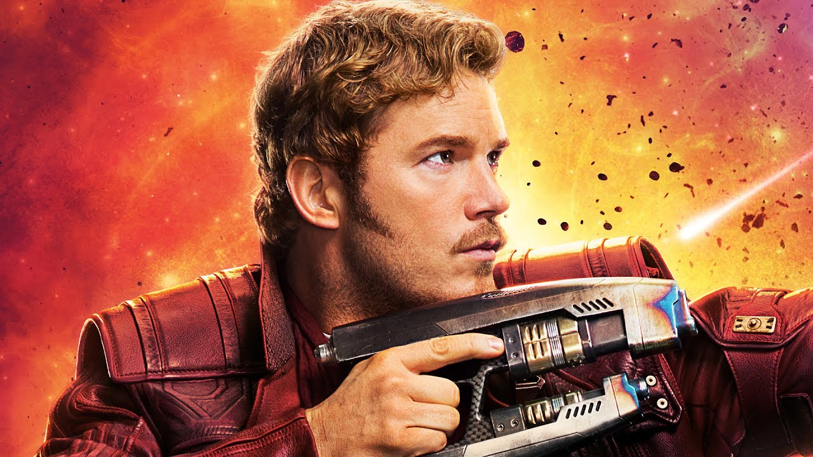

Инетересные фразы звездного лорда

Разговор Питера Квилла
"— Вот смотрю я на нас и знаете, кого вижу? Неудачников. Точнее, нет, в смысле тех, кто что-то в жизни потерял. Ведь каждый из нас чего-то лишился: родного дома, своих родных, нормальной жизни. Обычно жизнь больше берет, чем дает, но не сегодня. Сегодня она делает нам подарок. Да! Жизнь дает нам шанс."
― Звёздный Лорд
"Ты ж сам сказал, упырь, мы - Стражи Галактики!"
― Звёздный Лорд Ронану Обвинителю
Разговор насчёт Питера Квилла
Диалоги
"Глупец! Ещё захотел?
Ну, а что? Ты симпатичная."
― Гамора и Звёздный Лорд
"Постой! Может ты знаешь меня под другим именем. Звёздный Лорд
Кто?!"
― Звёздный лорд и Корат
Стражи Галактики. Часть 2
Разговор Питера Квилла
"Бывает так, что то чего мы ищем всю жизнь...на самом деле совсем рядом."
― Звёздный Лорд
Диалоги
Мстители: Война бесконечности
Разговор Питера Квилла
"Так Стражи, скорее всего там серьёзная заваруха, так что делаем лица по злее."
― Звёздный Лорд
"Чувак! Какие понты? Мы даже не знаем что это! А план хорош, если мы хотим огрести. Давайте я замучу план, и вот тогда он будет что надо."
― Звёздный Лорд к Тони Старку
"Пусти её. А не то сейчас напрочь снесу этот поганый бурдюк, что у тебя вместо челюсти."
― Звёздный Лорд к Таносу
Разговор насчёт Питера Квилла
"Если случится так, что Танос схватить меня, я прошу тебя в тоже мгновение, меня убить."
― Гамора к Звёздному Лорду
Диалоги
"Грут, убери ту дрянь, живо. Я не буду повторять. Грут?
Я есть Грут.
Грут!
Тебе рот вымыть?"
― Звёздный Лорд, Грут и Енот Ракета
"Кто мне объяснит, как этот чувак выжил?
Это не чувак. Ты чувак. А это, это мужчина. Красивый, мускулистый мужик.
И я мускулистый.
Ой, я тебе умоляю, Квилл. Ты без пяти минут жирдяй.
Он прав, Квилл. Ты набрал вес.
Что? Гамора, по-твоему?"
― Звёздный Лорд, Дракс Разрушитель и Енот Ракета
"Задам очень простой вопрос: где Гамора?
А, я ещё проще: что за Гамора.
Можно ещё проще: зачем Гамора?"
― Звёздный Лорд, Железный человек и Дракс Разрушитель
"Он скорбит.
По ком этот изверг может скорбит?
По Гаморе.
Что?
Он увёз её на Вормир. И вернулся с камнем души, а она нет."
― Мантис, Дракс Разрушитель, Небула и Звёздный Лорд
"Сложнейший выбор сделает сильнейший.
Боюсь огорчу, но у нас сил не меньше.
У нас.
Порядок, Квилл.
Аха, порядок, теперь он взбешён!"
― Танос, Доктор Стрэндж, Железный человек и Звёздный Лорд
"Я хочу убить Таноса за Гамору. А вы кто?
Мы Мстители, чувак"
― Звёздный Лорд и Человек-паук
"Я ускорил время, посмотрел варианты будущего, чтобы оценит все вероятные исходы конфликта.
И много увидел?
Четырнадцать миллионов, шестьсот двадцать пять.
Склько победных?
Один."
― Доктор Стрэндж, Звёздный Лорд и Железный человек
"Ты чего, Квилл
.
О господи."
― Тони Старк и последние слова Звёздного Лорда